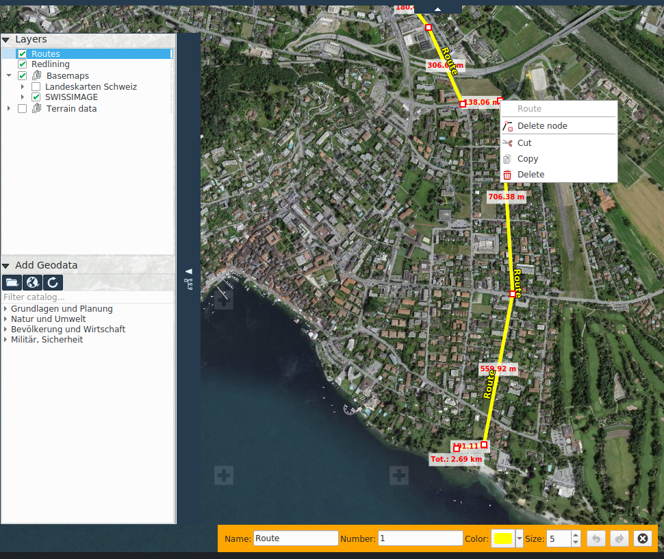

GPS
Functions for interacting with GPS devices and for route planning are located in the GPS tab.
Interaction with GPS devices
KADAS supports GPS devices that output a NMEA stream via a serial (COM) interface. The application Franson GPS-Gate Splitter can generate a virtual COM interface for many GPS devices through which KADAS can receive NMEA data.
In KADAS, the connection with a GPS device is made via the toggleable icon in the status bar or via the corresponding button in the GPS tab. The icon in the status bar indicates the status of the connection. If the connection is successful, a position marker is displayed in the map. If the function Move with GPS is active, the map extent automatically moves with the GPS position.
GPS routes
GPX (GPX Exchange Format) is a standard for exchanging GPS data between devices and applications. It describes waypoints, routes and tracks.
KADAS provides functions for creating, editing and exporting GPS routes.
Imported routes or those created via Draw Waypoints and Draw Routes are stored in the GPS routes layer. Waypoints are represented as point geometries, routes and tracks as line geometries. They can be edited in a similar way to redlining geometries, with the additional option of specifying GPX attributes.
